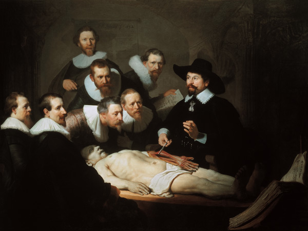
La lección de anatomía del Dr. Nicolaes Tulp
Rembrandt
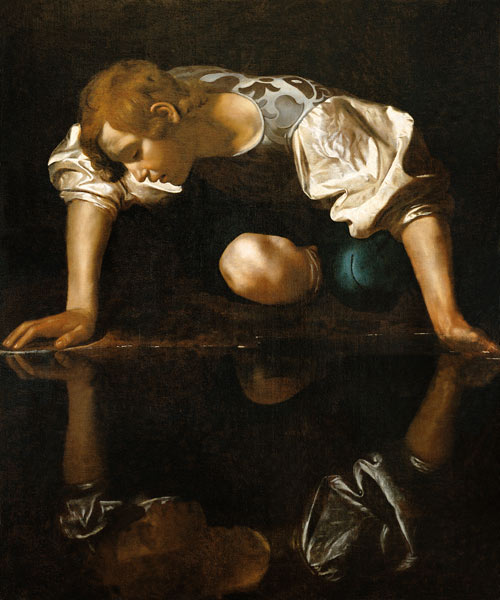
Narciso
Caravaggio
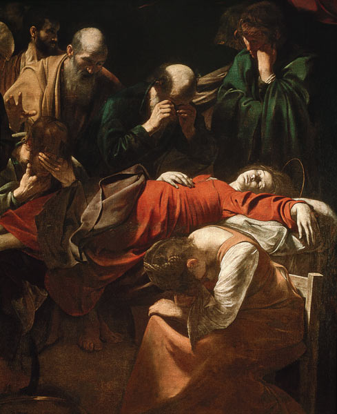
La muerte de la Virgen
Caravaggio
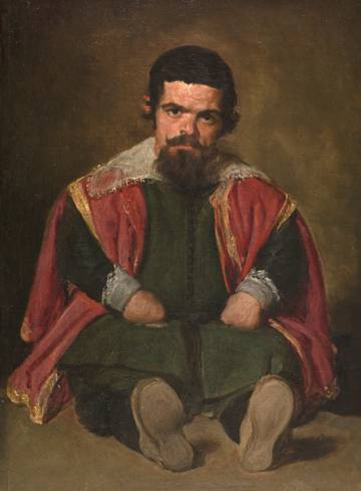
Sebastián de Morra
Francisco de Goya
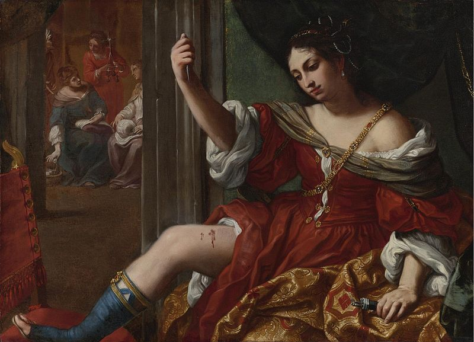
Porcia hiriéndose en el muslo
Elisabetta Sirani
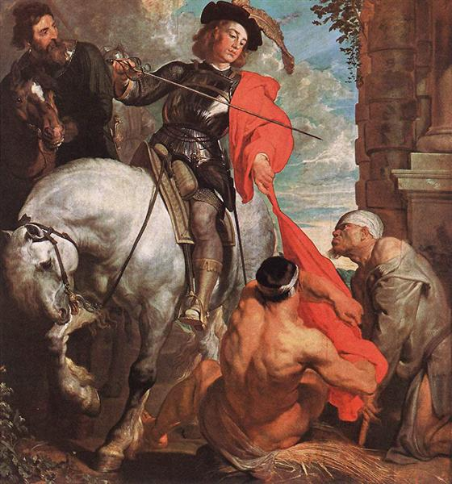
San Martín y el Mendigo
Anton van Dyck

Naturaleza muerta cons peces, ostras y cangrejos de río con un gato
Clara Peeters
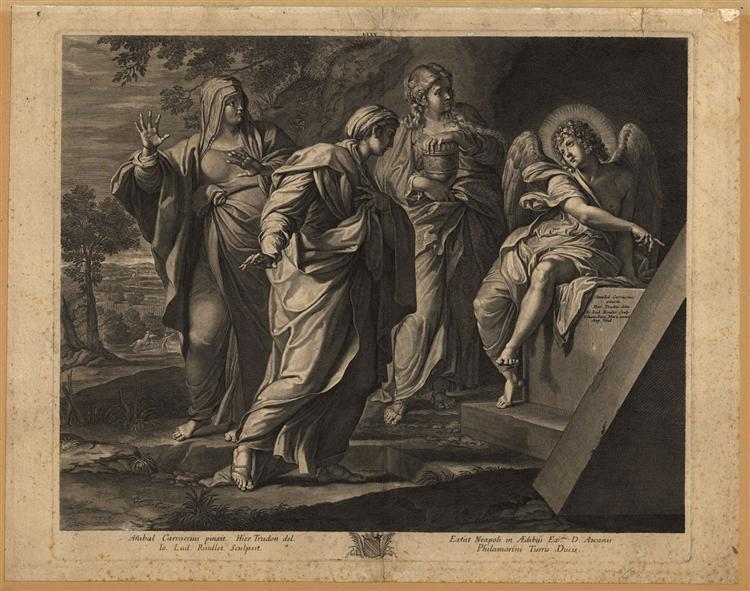
Las Santas Mujeres ante la tumba de Cristo
Annibale Carracci
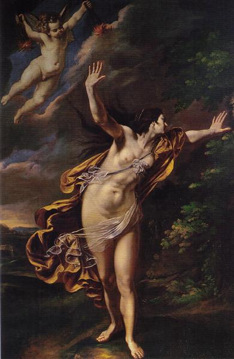
Aurora
Artemisia Gentileschi
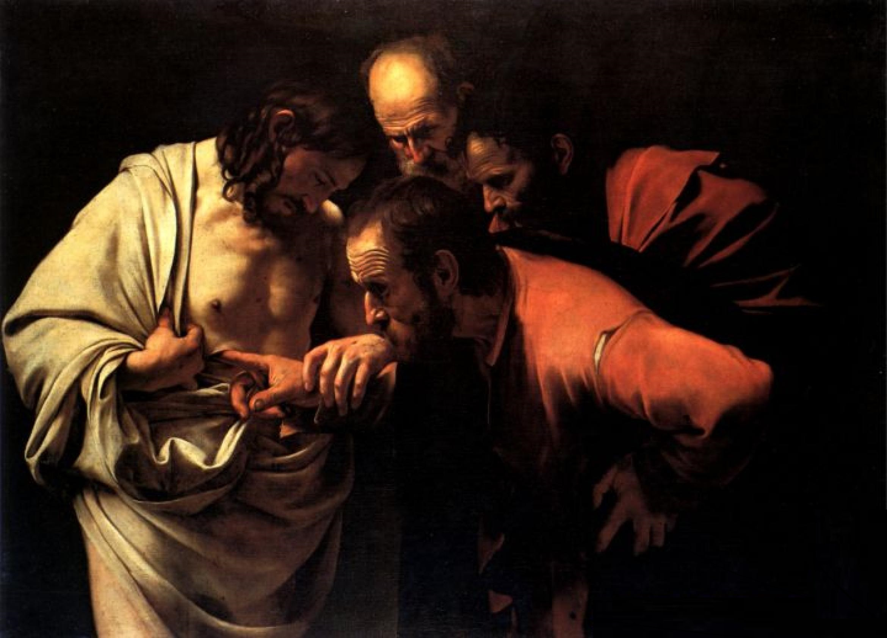
La incredulidad de Santo Tomás
Caravaggio
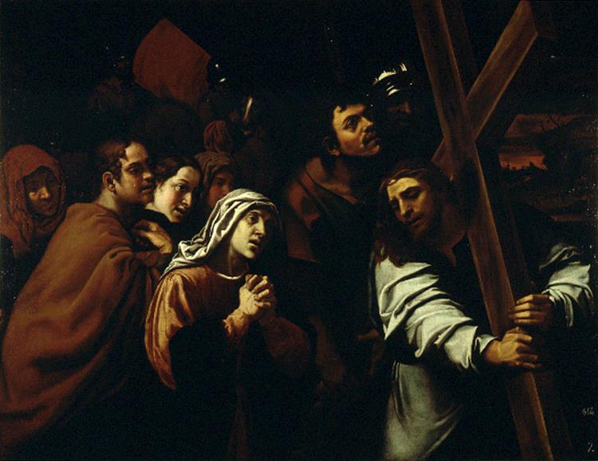
Encuentro del Nazareno con la Virgen
Francisco Ribalta

Las Meninas
Diego Velázquez
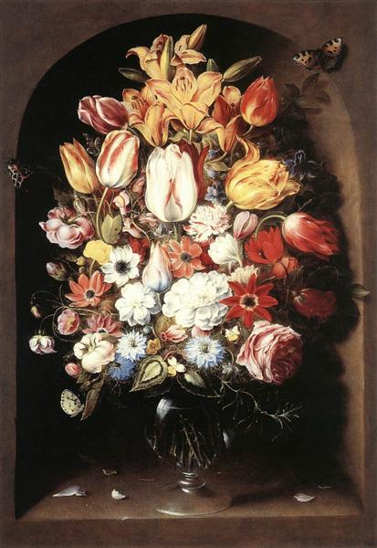
Bouquet in a Niche
Osias Beert, el viejo
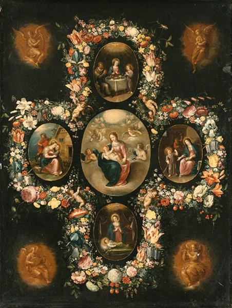
La Virgen y el Niño con escenas de la vida de Cristo
Frans Francken II

Little Rogue (Robinetta)
Joshua Reynolds